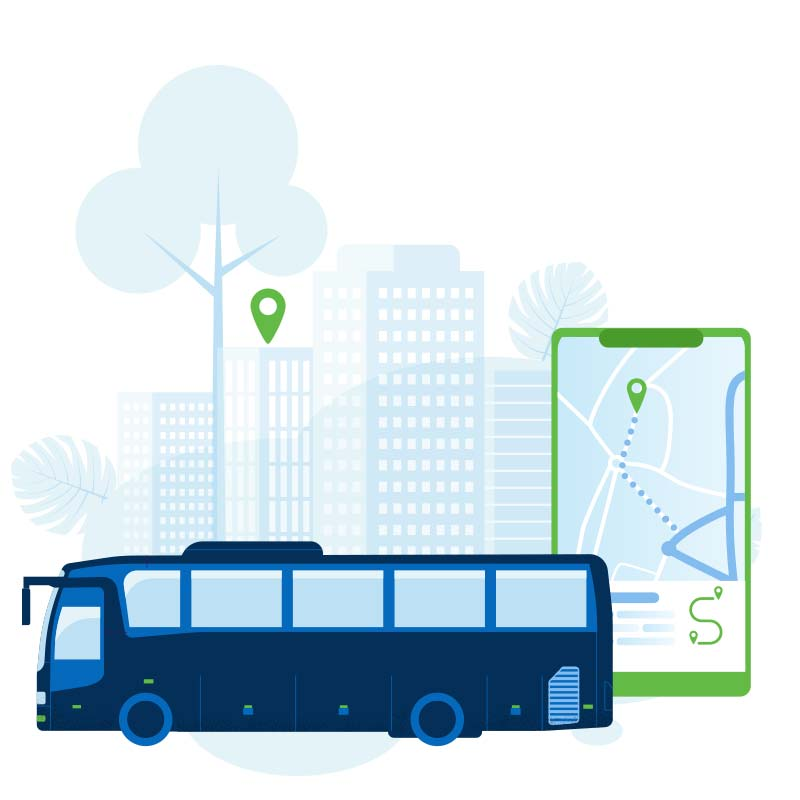

<!-- <ion-header class="ion-no-border">
   <ion-toolbar>
       <ion-buttons slot="start">
          <ion-back-button icon="chevron-back" defaultHref="home"></ion-back-button>
       </ion-buttons>
   </ion-toolbar>
</ion-header> -->
 <app-header>
</app-header>
<ion-content [fullscreen]="true">

    <div class="header">
        
    </div>
    <div class="padding">
    <ion-list>
        <ion-item lines="none" class="input " (click)="openCitiesModal(departureStop,departureReturned)">
            <ion-icon slot="start" name="locate"></ion-icon>
            <ion-label class="ion-margin-top" *ngIf="!departureReturned"><h3>{{departureStop}}</h3></ion-label>
            <ion-label class="ion-margin-top" *ngIf="departureReturned && departureStop "><h3>{{departureReturned}}</h3></ion-label>
        </ion-item>
        <ion-item lines="none" class="input" (click)="openCitiesModal(arrivalStop,arrivalReturned)">
            <ion-icon slot="start" name="location-sharp"></ion-icon>
            <ion-label class="ion-margin-top" *ngIf="!arrivalReturned"><h3>{{arrivalStop}}</h3></ion-label>
            <ion-label class="ion-margin-top" *ngIf="arrivalReturned && departureStop "><h3>{{arrivalReturned}}</h3></ion-label>
        </ion-item>
        <ion-item lines="none" class="input">
            <ion-icon slot="start" name="calendar"></ion-icon>
            <ion-datetime placeholder="Date de depart" required></ion-datetime>
        </ion-item>
        <ion-button mode="ios" [disabled]="!validSearch(arrivalReturned,departureReturned)" class="ion-margin-top"
                    color="primary" expand="block" (click)="openTripsModal(departureReturned,arrivalReturned)">Rechercher</ion-button>
    </ion-list>
    </div>
</ion-content>
